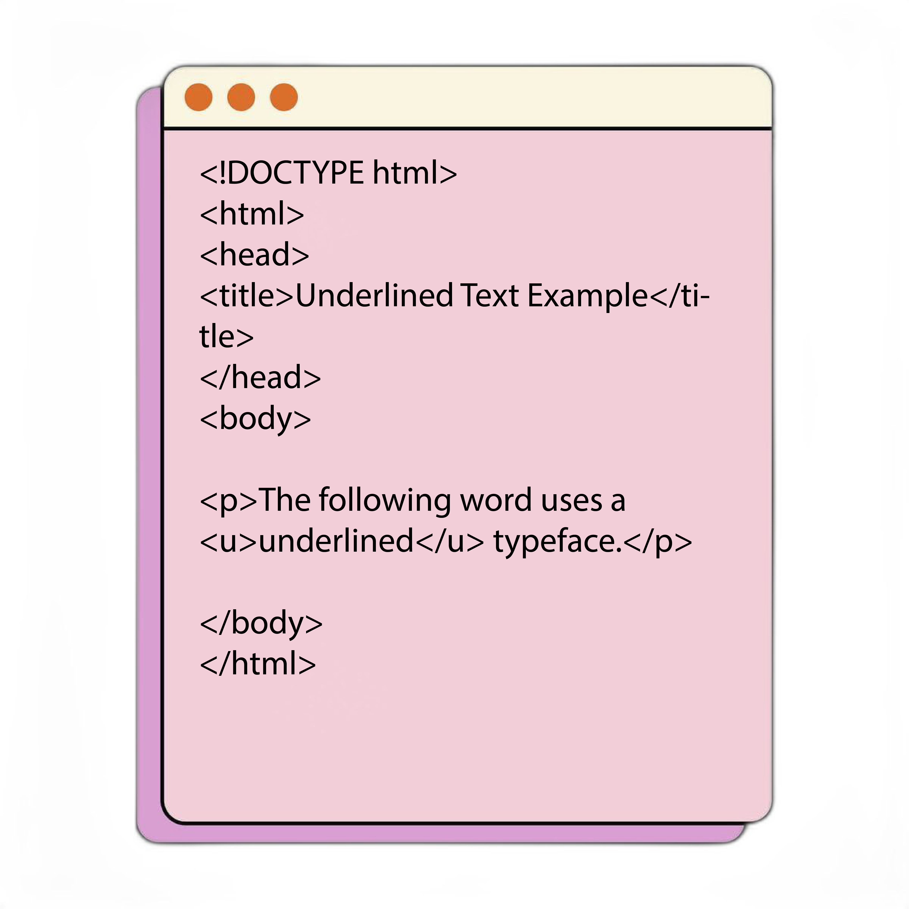

Source Code:

HTML Underline
The "u" tag represents some text that is unarticulated and styled differently from normal text, such as misspelled words or proper names in any text. The content inside is typically displayed with an underline.
Output:

- The HTML Underlineis anything that appears within ("u"..."/u") element, is displayed with underline.
- The "u" tag in HTML stands for underline, and it’s used to underline the text enclosed within the ("u") tag.
- This tag is generally used to underline misspelled words
- This tag requires a starting as well as ending tag.